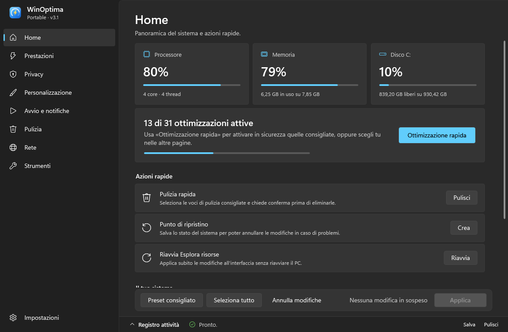
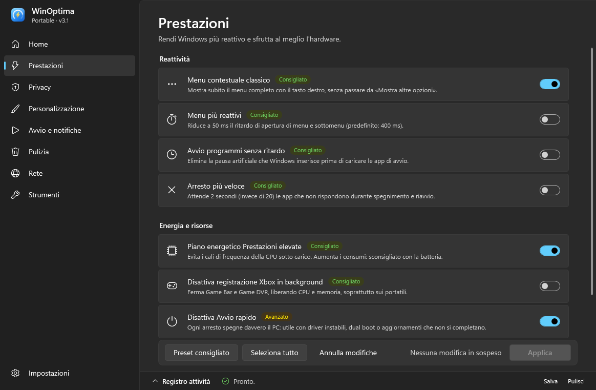
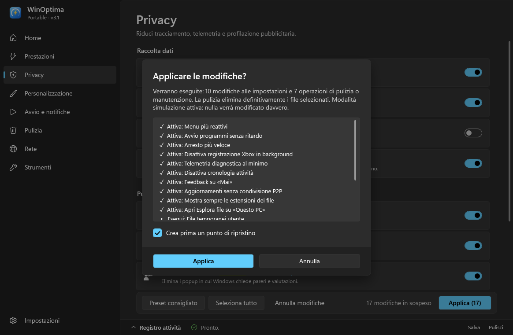
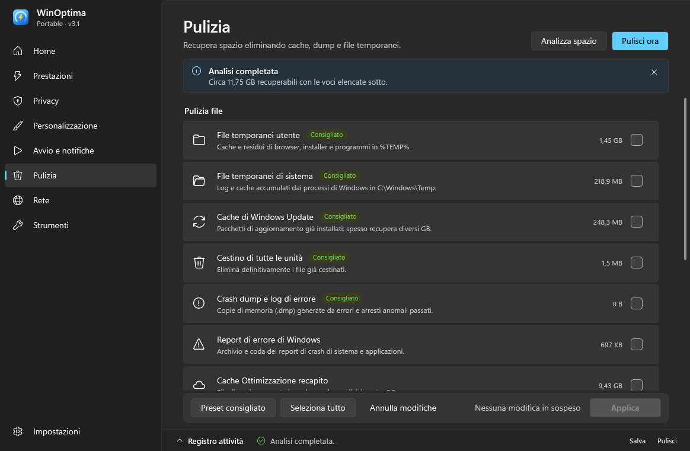
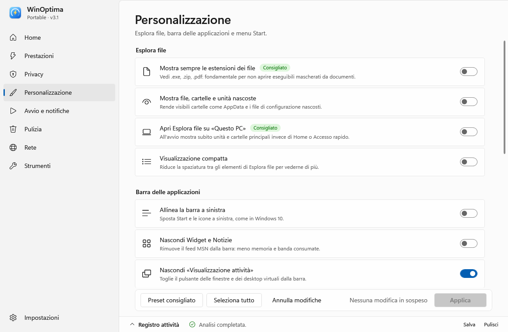

WinOptima è l'ottimizzatore portatile che ha l'aspetto di Windows 11 e il carattere di un amico premuroso: velocizza, ripulisce e protegge la privacy, ma ti chiede sempre prima e sa tornare indietro.
Un solo file da circa 330 KB · Windows 10 e 11 · niente installazione · gratis

44 interruttori e operazioni, divisi come nelle Impostazioni di Windows. Nessuna magia nera: ogni voce dice cosa tocca.
Menu istantanei, avvio senza attese, arresto rapido, piano energetico al massimo, addio Game DVR.
Telemetria al minimo, niente ID pubblicitario, ricerca Start solo locale, aggiornamenti senza P2P.
Menu contestuale classico, estensioni visibili, barra a sinistra, icone del desktop e molto altro.
Decidi chi parte con Windows (o eliminalo, con copia di sicurezza) e quali icone restano sulla barra.
Office preinstallato, Candy Crush, Notizie, Solitaire, antivirus in prova: li riconosce, li spunti e spariscono. Senza toccare nulla di importante.
Prima ti dice quanto spazio puoi recuperare, poi pulisce temporanei, cache, dump e Cestino. Su un PC di prova: 11 GB.
DNS veloci in un clic, Desktop remoto, riparazione rete, SFC, DISM e scorciatoie a tutti gli strumenti di sistema.
Mica, tema chiaro o scuro automatico, il colore di accento del tuo Windows. Sembra un'app di sistema, perché si comporta come tale.




Un ottimizzatore deve far dormire sonni tranquilli. Ecco come.
Spegni l'interruttore e premi Applica: tornano i valori originali di Windows.
Prova tutto a vuoto: il registro attività racconta cosa farebbe, senza fare nulla.
Una spunta nel dialogo di conferma e Windows salva il suo stato prima di procedere.
Passa il mouse su una voce per vedere le chiavi di registro. Tutto il codice è su GitHub.
La pulizia si rifiuta di toccare radici di unità, cartella Windows, profilo utente e programmi.
Se una voce fallisce lo dice chiaramente e passa alla successiva, senza fermare tutto.
Tre passi, zero installazioni.
Doppio clic su WinOptima.exe e conferma il prompt di Windows (serve l'amministratore per modificare il sistema).
Accendi ciò che ti serve, oppure premi Preset consigliato per le ottimizzazioni sicure.
Controlla l'elenco, conferma, e guarda il registro attività lavorare per te. ☕
No: l'exe non è firmato digitalmente (un certificato costa caro) e SmartScreen non lo conosce ancora. Clicca Ulteriori informazioni → Esegui comunque. Se preferisci, puoi leggere e avviare direttamente WinOptima.ps1 dal repository.
Fa solo modifiche note e documentate, tutte reversibili, e ti chiede conferma prima. Se vuoi la massima tranquillità, attiva la modalità simulazione o crea un punto di ripristino dal dialogo di conferma.
L'exe si estrae in %LOCALAPPDATA%\WinOptima, dove tiene anche preferenze e copie di sicurezza. Per disinstallare: cancella l'exe e quella cartella. Fine.
Niente panico: in %LOCALAPPDATA%\WinOptima\Backup\Avvio trovi un file .reg (doppio clic per ripristinarlo) oppure il collegamento originale.
Sì. Le voci esclusive di Windows 11 vengono nascoste e, al posto dell'effetto Mica, c'è uno sfondo a tinta unita.
Gratis, portatile, senza pubblicità e senza raccolta dati. Ironico, per un'app che toglie la telemetria.